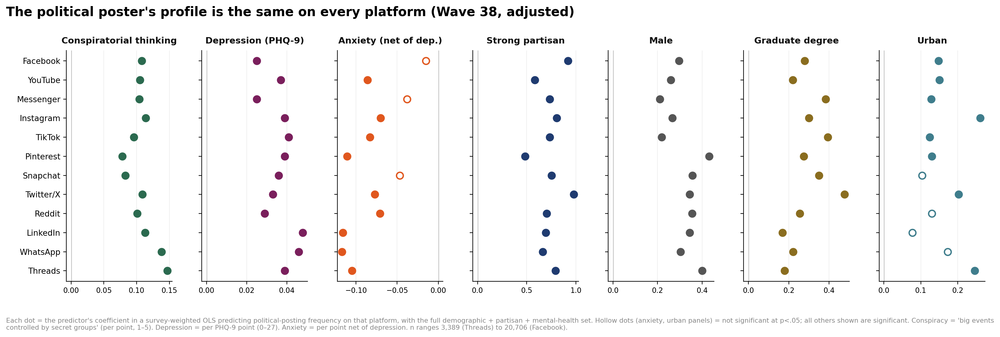
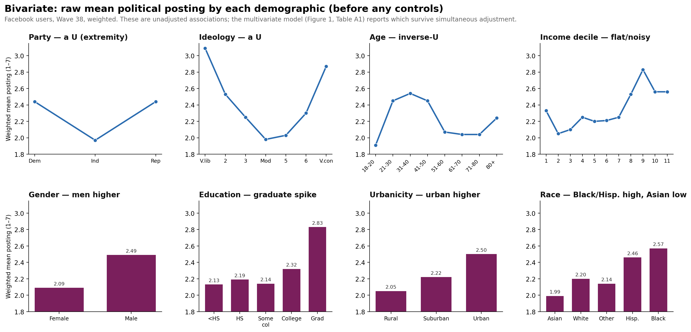
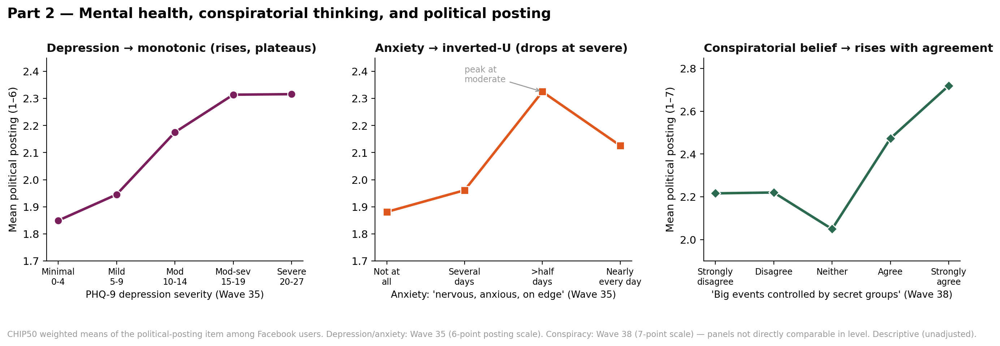
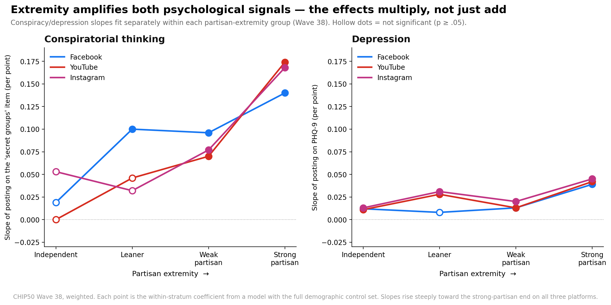
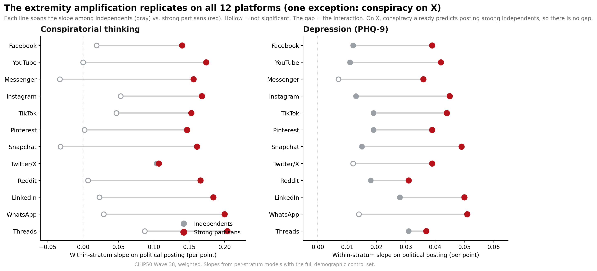

Who Posts About Politics?
Posting about politics on social media is a minority activity — most users, on most platforms, essentially never do it — and the minority who do are a distinctive group.
A CHIP50 report — primary wave: Wave 38, which fields political posting on all platforms alongside the PHQ mental-health battery and the conspiracy scale. Demographic and mental-health shapes corroborated in Wave 35.
This report profiles them, and its central finding is that the profile does not depend on the platform. Across a dozen services, from Facebook to TikTok to LinkedIn to Reddit, the same kind of person posts about politics: the ideologically and partisan-extreme, the more educated, men, the somewhat urban, and — psychologically — the depressed and the conspiratorial. Anxiety, notably, is not part of the profile.
Source: CHIP50 (Civic Health and Institutions Project / COVID States Project). The behavior studied is frequency of posting about politics ("How often do you post about politics on the following platforms?"), asked separately for each platform among that platform’s users. Rather than treat any one platform as "the" measure, this report estimates the same model on twelve platforms and asks what is common across them. All estimates are survey-weighted. Associations are cross-sectional and describe who posts, not why.
Key Takeaways
- The same profile — and substantially the same people — post about politics on every platform. One profile model fit on twelve platforms gives strikingly consistent coefficients, so the political-poster profile is platform-invariant. And it is not merely different people matching a shared profile: among respondents who use multiple platforms, political-posting frequency correlates highly across them (median r ≈ 0.78 across all 66 platform pairs), so it is largely the same individuals who post about politics wherever they are.
- It's a minority activity everywhere. Depending on the platform, roughly 56% to 80% of users never post about politics at all; frequent political posting is a small, engaged minority.
- Extremity, not side. Ideological and partisan extremes post most — strong liberals and strong conservatives, strong Democrats and strong Republicans — while moderates and independents post least. Strong partisans out-post independents by a wide margin on all twelve platforms; it is the single largest predictor in every model.
- Posting peaks in early mid-life, not youth, following an inverse-U that rises from the youngest adults to a peak in the 20s–30s and declines thereafter — on every platform.
- Education and urbanicity both matter. Graduate-degree holders post most about politics on every platform; urban residents post more than rural on most. Income, by contrast, shows no systematic relationship — the highest earners are not the heaviest political posters.
- The depression signal is specifically suicidal ideation. More depressed people post more about politics on every platform — but splitting the PHQ-9 composite apart, the self-harm / suicidal-ideation item carries essentially the entire association (+0.31 to +0.52 per point, all p < .001 on all twelve platforms), while the other eight depressive symptoms carry none. It is thoughts of self-harm, not general low mood, that mark the political poster.
- Conspiratorial thinking is the other psychological signature — and it is separate. More conspiratorial people post more on every platform (+0.08 to +0.15 per point), and it survives depression in a same-wave contest. Depression-as-ideation and conspiratorial thinking are two distinct, stable, person-level markers.
- Anxiety is not part of the profile. Net of depression, anxiety is null-to-negative on all twelve platforms — the most anxious, if anything, post less. The mental-health signal is depression — and within it, ideation — not anxiety.
Introduction
A companion report established that how often people post about politics is a robust correlate of depression — more so than passive social-media use or non-political posting. That raises the prior question here: who are the political posters? Because political expression online shapes the information environment and is concentrated among a distinctive few, characterizing them matters — and because political posting is measured platform-by-platform, it also raises a methodological question: is the profile of a "political poster" the same everywhere, or an artifact of, say, Facebook’s older users or X’s politics-heavy culture?
The answer is that it is essentially the same everywhere. This report therefore does not privilege any single platform. It fits one profile model on twelve platforms and leads with what is common across them, treating platform-specific quirks as secondary. Part 1 covers demographics and politics; Part 2 covers mental health and conspiratorial thinking. Two themes run throughout: the predictors are strongly non-linear (so the report leads with shapes, not slopes), and they replicate platform to platform.
The Same Profile on Every Platform
The backbone of the report is a single model — political posting regressed on conspiratorial thinking, depression, anxiety, partisan extremity, gender, education, income, urbanicity, age, and race — fit identically on all twelve platforms in Wave 38. Figure 1 shows the headline coefficients. The story is in how the columns line up: for conspiratorial thinking, depression, strong-partisanship, being male, and graduate education, every platform sits on the same (positive) side of zero, at similar magnitudes; for anxiety, every platform sits on the negative side.

That platform-invariance is the report’s most important structural finding: the associations below are about the kind of person who posts about politics, wherever they do it. The consistency runs deeper than the profile: it is not only the same kind of person but largely the same people. Correlating each respondent’s political-posting frequency across platforms, among people who use both, the correlations are high and uniform (median r ≈ 0.78, ranging 0.69 to 0.89 across all 66 platform pairs, every one significant). The full matrix, a robustness check that holds even among active posters, and the accompanying caveats are in the companion cross-platform correlation analysis.
Part 1 — Demographic and Political Predictors
This report reads every association in two steps. First the bivariate relationship — the raw, unadjusted mean posting for each group, before any controls (Figure 2 for the demographics; Figure 3 for the psychological measures). Then what survives the multivariate model that enters all predictors together (Figure 1, Table A1). The bivariate view shows the shape of each relationship; the multivariate view shows what remains independently associated with posting once everything else is held constant. Most of the demographic patterns below survive adjustment; income is the main one that does not.

Prevalence: a minority activity everywhere
On every platform, most users essentially never post about politics. The share at the lowest ("never") category ranges from roughly 56% on X — the most politics-heavy platform — to about 80% on YouTube, with Facebook, Instagram, TikTok, Reddit, and LinkedIn all in between (typically 63–78%). Frequent political posting is a single-digit-to-low-teens share of users anywhere. Everything below therefore describes an engaged minority, not the typical user of any platform.
Ideology and partisanship: extremity, not side
The strongest predictors are the two political ones, and both say the same thing: what drives political posting is distance from the center, not which side you are on. Bivariately (Figure 2), ideology traces a clean, symmetric U — the very liberal and the very conservative post far more than moderates — and party shows the same shape. In the multivariate model, collapsing partisanship into an ordered extremity measure (independent → leaner → weak → strong partisan) recovers this U as a steep monotonic gradient, and that gradient is the single largest coefficient in every one of the twelve platform models: strong partisans out-post independents by roughly +0.5 to +1.0 on the posting scale, everywhere.
Age: an early-mid-life peak
Bivariately (Figure 2), age is inverse-U: political posting is lowest among the youngest adults, rises to a peak in the 20s–30s, and declines through middle and older age. In the multivariate model the hump survives on every platform. The exact peak sits youngest on image- and video-first platforms (Instagram, TikTok) and around 21–50 on the others, but the inverse-U is universal.
Education and urbanicity
Education. Bivariately (Figure 2), the education gradient is shallow across the lower rungs, then jumps sharply at the top: graduate-degree holders post distinctly more (a mean of 2.83 vs ~2.1–2.3 for everyone else). In the multivariate model that graduate-degree premium survives on every platform — advanced education is one of the clearest positive predictors of political posting.
Urbanicity. Bivariately (Figure 2), posting rises steadily from rural to suburban to urban. In the multivariate model the urban premium survives on most platforms — significantly so on Facebook, Instagram, X, YouTube, TikTok, Pinterest, and Threads. The urban premium is modest but consistent.
Gender, race, and income
Gender is a simple, universal gap in both views: bivariately men post more than women (2.49 vs 2.09), and the gap survives adjustment on every platform. Race: bivariately, Black and Hispanic respondents post most and Asian Americans least; this ordering broadly survives the controls, with Asian Americans the lowest-posting group on every platform. Income is the one place bivariate and multivariate agree on a null: the raw gradient is flat and noisy, and once education and age are held constant income shows no systematic relationship with posting.
Evaluating non-linearity
Two predictors are genuinely non-monotonic — ideology and partisanship (U-shaped by extremity) and age (inverse-U) — while gender, urbanicity, and (after adjustment) education are effectively monotonic, and income is flat and noisy. The formal point is sharpest for ideology: a straight line through the 7-point ideology scale explains essentially none of its relationship with posting (R² ≈ 0.001), because the two upswinging ends cancel; the U-shaped (categorical) form explains far more (R² ≈ 0.04, a ~37-fold improvement). The modeling lesson: never enter ideology or party as a linear term for a political-behavior outcome, or the analysis will report "no relationship" where the relationship is one of the strongest in the data.
Part 2 — Mental Health and Conspiratorial Thinking
The psychological profile of political posters is as platform-invariant as the demographic one, and it is read the same two-step way: first the bivariate gradient (Figure 3), then what survives the multivariate model (Figure 1). The measures are the PHQ-9 depression composite (0–27), the two GAD-2 anxiety items, and the four-item conspiracy scale (Wave 38). Because these are cross-sectional, they describe the mental-health profile of posters, not effects of posting.

Depression — and, within it, suicidal ideation
Bivariately (Figure 3, left), political posting rises steadily with depression severity and plateaus at the top. In the multivariate model depression survives the full demographic-plus-partisan control set on every platform (Figure 1; +0.025 to +0.048 per PHQ-9 point, all significant), the coefficient remarkably stable across platforms.
But the composite hides where that signal comes from. The PHQ-9 is nine items; one of them asks about "thoughts that you would be better off dead, or of hurting yourself" — suicidal ideation. Entering the composite and this single item together isolates whether ideation adds anything beyond ordinary depressive symptomatology. It adds almost everything. On every one of the twelve platforms, the suicidal-ideation item is strongly positive (+0.31 to +0.52 per point on its 1–4 scale, all p < .001), while the depression composite net of that item — the other eight symptoms combined — falls to essentially zero. The "depression → posts about politics" association is not about sleep, appetite, concentration, or low mood; it is almost entirely about the respondents who report thoughts of self-harm (Figure 4).
![Figure 4. Decomposing the depression signal. For each platform, one survey-weighted model enters the PHQ-9 composite and its suicidal-ideation item together. Red dots = the ideation item’s coefficient; gray dots = the composite net of ideation (≈ the other eight symptoms). Filled = p < .05; hollow = n.s. Wave 38. Because the ideation item is one of the nine composite items, "composite net of ideation" is by construction the other-eight-symptom effect — the one item carries the predictive weight the composite appears to have.](assets/img/who-posts-politics/chart-04.png)
Anxiety
Anxiety behaves differently. Bivariately it is inverse-U — posting rises with anxiety up to a moderate level and then falls at the most severe level (Figure 3, middle). But in the multivariate model, net of depression, anxiety is null-to-negative on all twelve platforms, significantly negative on most. Once depression is accounted for, anxiety is not an independent marker of political posting, and the most severely anxious post somewhat less.
Conspiratorial thinking
Conspiratorial thinking is a strong, independent, and platform-invariant predictor. Bivariately (Figure 3, right), agreement with the classic item — "big events like wars, recessions, and elections are controlled by small groups working in secret" — traces a steeply rising gradient in posting. In the multivariate model it survives on every platform (+0.08 to +0.15 per point, all significant). Like depression, its coefficient is strikingly stable from platform to platform — the mark of a person-level disposition carried onto whatever service someone uses.
What predicts posting: a same-wave comparison
Because Wave 38 carries conspiracy, depression, and anxiety together, they can be raced directly. With the full control set, both conspiratorial thinking and depression survive each other, each barely diminished — they are largely separate psychological signatures. This survival is robust to the ideation decomposition: conspiratorial thinking stays strongly positive (+0.07 to +0.14 per point) right alongside the ideation item. Anxiety again drops out. The political poster, psychologically, is disproportionately both suicidally-ideating and conspiratorial, and these are two distinct things.
Further Findings — Extremity Amplifies the Psychological Signals
Figure 1 shows that conspiratorial thinking, depression, and strong-partisanship each independently predict posting. A natural next question is whether they combine additively or multiplicatively: are the most extreme partisans who are also conspiratorial or depressed the heaviest posters, by more than adding the separate effects would predict? Because the model cannot include interaction terms directly, this is tested by stratification — fitting the conspiracy and depression slopes separately within each partisan-extremity group (independent → leaner → weak → strong), with the full control set. Flat slopes across extremity would mean additive; slopes that steepen toward the strong-partisan end mean the effects multiply.
They multiply. Figure 5 shows the full four-group gradient on the three largest platforms; Figure 6 shows the independent-vs-strong contrast on all twelve.


Depression amplifies on all 12 platforms. The depression slope is steeper among strong partisans than independents on every platform — roughly +0.012 among independents to +0.04 among strong partisans, a 2-to-4× rise — and it is significant among strong partisans everywhere.
Conspiratorial thinking amplifies on 11 of 12 platforms. The "secret groups" slope is near-zero and non-significant among independents but +0.14 to +0.20 among strong partisans. The exception is X (Twitter): there, conspiracy already predicts posting among independents (+0.10) and strong partisans are barely higher (+0.11) — no amplification. On the one platform whose culture is most saturated with political conspiracy, the disposition drives posting regardless of partisanship.
So the heaviest political posters are the strong partisans who are also conspiratorial and/or depressed — the effects combine super-additively, everywhere except conspiracy on X. This is a stratified comparison of within-group slopes rather than a formal interaction-term test, so there is no single interaction p-value; but the direction is unambiguous and, for depression, holds twelve for twelve. Full per-stratum numbers are in Table A5.
Conclusion
Whoever they are and wherever they post, the people who post about politics on social media are a distinctive and consistent minority. They are the ideological and partisan extremes — of both left and right — not one side and not the center. They peak in early mid-life, not youth. They are disproportionately male, highly educated, and urban, though not the highest-earning. And psychologically they are more depressed and more conspiratorial — two separate signatures — with the depression signal concentrated, strikingly, in the single item that asks about thoughts of self-harm rather than in general depressive symptoms; anxiety, once depression is accounted for, is not part of the picture. The striking thing is how little of this depends on the platform. That platform-invariance is the report’s strongest single claim, and it implies that political posting is driven by who people are far more than by the particular service they open. As always, the associations are cross-sectional: they describe who posts, not why.
Methods
Data. CHIP50 (Civic Health and Institutions Project / COVID States Project). Primary wave: Wave 38, the wave that fields political posting on all platforms together with the PHQ battery and the conspiracy scale. Wave 35 (which lacks the conspiracy items) is used to characterize the non-linear shapes and to corroborate the demographic and depression/anxiety patterns. All estimates survey-weighted (WLS); unweighted counts are reliability indicators only.
Behavior studied. Frequency of posting about politics on each platform, asked among that platform’s users. The scale is six-point in Wave 35 (1 = Never … 6 = Multiple times a day) and seven-point in Wave 38; the two are never mixed within a model. Twelve platforms are modeled: Facebook, YouTube, Messenger, Instagram, TikTok, Pinterest, Snapchat, X (Twitter), Reddit, LinkedIn, WhatsApp, Threads. Niche platforms (Gab, Parler, Truth Social, 4chan, Mastodon, Bluesky, Post, Tumblr) have political-posting samples too small for a model with this many predictors and are not modeled.
Predictors. Conspiratorial thinking (the "secret groups" item, 1–5); depression (PHQ-9 composite, 0–27); anxiety (the "nervous/anxious" item, 1–4, reported net of depression); partisan extremity (an ordered recode of seven-point party ID); gender; education; income; urbanicity; age; race. The depression decomposition (Figure 4, Table A4) re-fits each model entering the PHQ-9 composite and its suicidal-ideation item simultaneously.
Analysis. One survey-weighted OLS per platform, all predictors entered together. Non-linearity is assessed by comparing linear vs. categorical fit. The extremity interaction (Figures 5–6, Table A5) is tested by fitting the conspiracy and depression slopes separately within each extremity stratum — a stratified comparison, not a formal interaction-coefficient test. Standard errors are model-based, not design-based, so significance is approximate.
Caveats. (1) Political posting is defined only among a platform’s users; estimates are conditional on use. (2) The data are cross-sectional; the mental-health and conspiracy associations describe who posts, not causal effects. (3) Smaller-sample platforms (Threads, WhatsApp, LinkedIn) have wider intervals.
Appendix — Data Tables
Table A1. Adjusted coefficients predicting political-posting frequency, by platform (Wave 38). Source for Figure 1.
| Platform | n | Conspiracy | Depression | Anxiety | Str. partisan | Male | Grad. | Urban |
|---|---|---|---|---|---|---|---|---|
| 20,706 | +0.108*** | +0.025*** | −0.015 | +0.92*** | +0.30*** | +0.28*** | +0.15*** | |
| YouTube | 19,536 | +0.105*** | +0.037*** | −0.086*** | +0.58*** | +0.26*** | +0.22*** | +0.15*** |
| Messenger | 15,778 | +0.104*** | +0.025*** | −0.038 | +0.74*** | +0.21*** | +0.38*** | +0.13** |
| 14,624 | +0.114*** | +0.039*** | −0.070** | +0.80*** | +0.27*** | +0.30*** | +0.26*** | |
| TikTok | 12,651 | +0.096*** | +0.041*** | −0.083*** | +0.73*** | +0.22*** | +0.39*** | +0.12* |
| 7,591 | +0.078*** | +0.039*** | −0.111*** | +0.49*** | +0.43*** | +0.27*** | +0.13* | |
| Snapchat | 7,525 | +0.083*** | +0.036*** | −0.047 | +0.75*** | +0.36*** | +0.35*** | +0.10 |
| Twitter/X | 7,266 | +0.109*** | +0.033*** | −0.077* | +0.98*** | +0.34*** | +0.48*** | +0.20* |
| 6,599 | +0.101*** | +0.029*** | −0.071* | +0.70*** | +0.36*** | +0.26*** | +0.13 | |
| 5,781 | +0.113*** | +0.048*** | −0.116*** | +0.70*** | +0.34*** | +0.17** | +0.08 | |
| 5,562 | +0.138*** | +0.046*** | −0.117** | +0.66*** | +0.30*** | +0.22** | +0.17 | |
| Threads | 3,389 | +0.147*** | +0.039*** | −0.105* | +0.79*** | +0.40*** | +0.18 | +0.25* |
p < .001, p < .01, p < .05; unmarked = n.s. All models survey-weighted, Wave 38, with full controls (income, age, race not shown). Conspiracy and depression per-point; the rest are group contrasts (strong-partisan vs independent; male vs female; graduate vs college; urban vs rural).
Table A4. Decomposing the depression signal — composite vs. its suicidal-ideation item (Wave 38). Source for Figure 4.
| Platform | n | Composite, net of ideation | Ideation item (per point) | Conspiracy (same model) |
|---|---|---|---|---|
| 20,754 | −0.004 | +0.351*** | +0.106*** | |
| YouTube | 19,572 | −0.007** | +0.414*** | +0.101*** |
| Messenger | 15,811 | −0.009** | +0.378*** | +0.101*** |
| 14,652 | −0.004 | +0.402*** | +0.114*** | |
| TikTok | 12,674 | −0.004 | +0.410*** | +0.092*** |
| 7,607 | −0.006 | +0.406*** | +0.069*** | |
| Snapchat | 7,539 | −0.009* | +0.442*** | +0.081*** |
| Twitter/X | 7,278 | −0.007 | +0.346*** | +0.105*** |
| 6,614 | −0.011** | +0.357*** | +0.098*** | |
| 5,795 | −0.009* | +0.519*** | +0.105*** | |
| 5,578 | −0.005 | +0.434*** | +0.132*** | |
| Threads | 3,396 | −0.000 | +0.309*** | +0.144*** |
p < .001, p < .01, p < .05; unmarked = n.s. On every platform the ideation item is strongly positive while the composite net of ideation is at or slightly below zero. Note the part-whole structure: the ideation item is one of the nine items in the composite, so "composite net of ideation" is by construction the combined effect of the other eight items.
Table A5. Extremity × psychology interaction — conspiracy and depression slopes among independents vs. strong partisans, by platform (Wave 38). Source for Figures 5–6.
| Platform | Conspiracy: Indep. | Conspiracy: Strong | Depression: Indep. | Depression: Strong |
|---|---|---|---|---|
| +0.019 | +0.140*** | +0.012** | +0.039*** | |
| YouTube | −0.000 | +0.174*** | +0.011** | +0.042*** |
| Messenger | −0.033 | +0.156*** | +0.007 | +0.036*** |
| +0.053 | +0.168*** | +0.013** | +0.045*** | |
| TikTok | +0.047 | +0.153*** | +0.019*** | +0.044*** |
| +0.002 | +0.147*** | +0.019*** | +0.039*** | |
| Snapchat | −0.032 | +0.161*** | +0.015** | +0.049*** |
| Twitter/X | +0.104* | +0.107*** | +0.012 | +0.039*** |
| +0.007 | +0.166*** | +0.018** | +0.031*** | |
| +0.023 | +0.184*** | +0.028*** | +0.050*** | |
| +0.029 | +0.200*** | +0.014 | +0.051*** | |
| Threads | +0.087 | +0.204*** | +0.031*** | +0.037*** |
p < .001, p < .01, p < .05; unmarked = n.s. The strong-partisan slope exceeds the independent slope for conspiracy on 11 of 12 platforms (Twitter/X the exception) and for depression on 12 of 12. Stratified within-group slopes, not a formal interaction-coefficient test.
CHIP50 Wave 38, with corroboration from Wave 35 (Civic Health and Institutions Project / COVID States Project). All figures are weighted estimates.